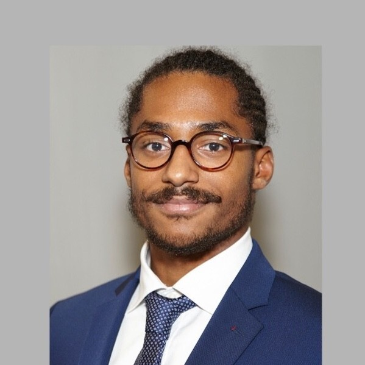

Welcome to the GTSBrain team of Noah's Ark Lab.
We work on spatio-temporal analysis, transfer learning, and many other exciting topics.
Our Team
Aladin Virmaux
Senior research engineer
Malik Tiomoko
Senior research engineer
Vasilii Feofanov
Senior research engineer

Ievgen Redko
Team lead
Romain Ilbert
Ph.D. student

Ambroise Odonnat
Ph.D. student
Oussama Zekri
Master's intern (ENS)
Recent news
- Our team will present 3 papers at the main track of ICML'24!
- We open-source a simple transformer model that achieves state-of-the-art in time series forecasting!
- Our team has two papers accepted at AISTATS'24! We introduce priors for more efficient transfer learning
and solve confidence estimation problem in semi-supervised learning under distribution shift. - We've organized a workshop on time series analysis and transfer learning in Paris Noah's Ark Lab.
- A runner-up for a best paper award at UAI'23 on tensor learning! Paper is available here.
- A paper on computational optimal transport accepted to TMLR! Paper is available here.
- 3 papers on amortized optimization, semi-supervised and multi-task learning are accepted to ICML'23!
- 1 paper on optimal transport for domain adaptation accepted to AAAI'23! Paper is available here.
- 1 paper on continual learning accepted to ICLR'23! Paper is available here.